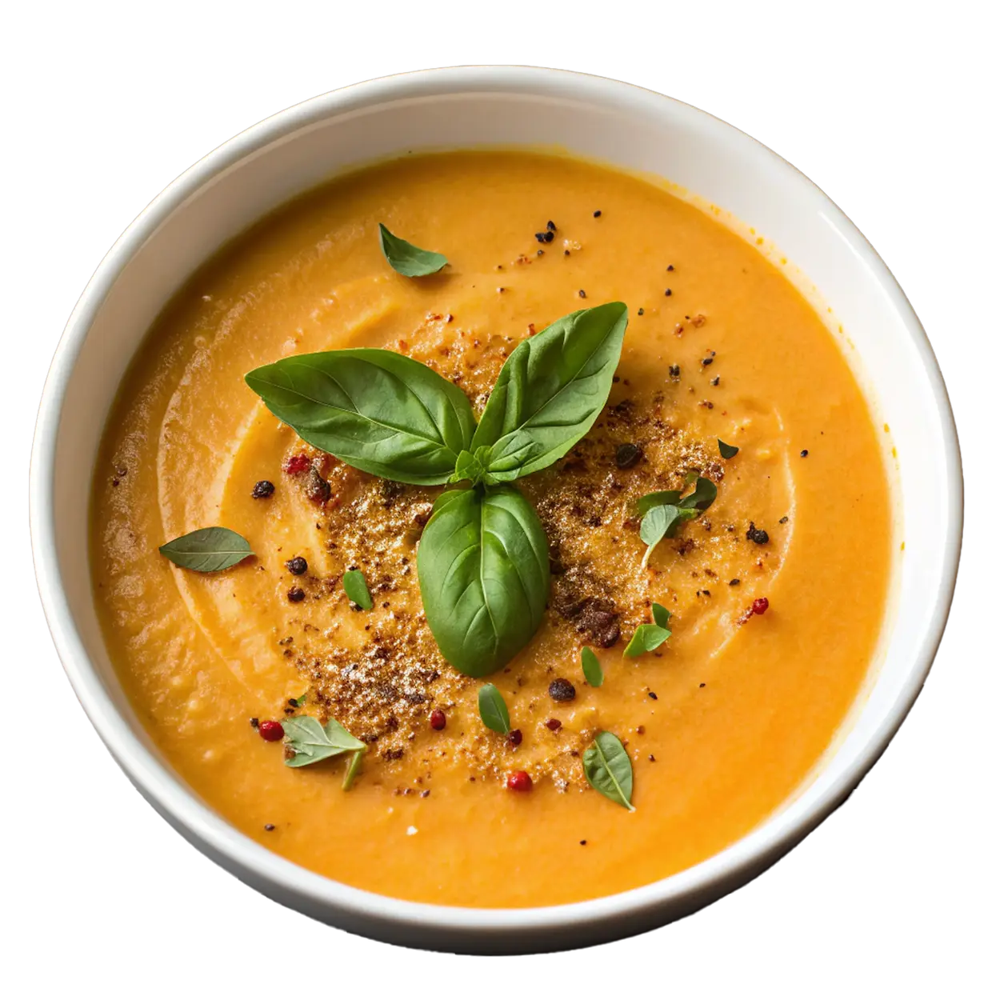

Crema de Calabaza y Crutones
Tiempo: 30 minutos · Dificultad: Fácil · Porciones: 4

Preparación
- En una olla grande, derrite la mantequilla a fuego medio y sofríe la cebolla junto con el ajo hasta que estén dorados y aromáticos.
- Agrega los cubos de calabaza a la olla y saltea durante 5 minutos para concentrar sus sabores.
- Vierte el caldo de verduras, sazona con sal, pimienta y la nuez moscada. Tapa la olla y cocina a fuego medio-bajo durante 20 minutos o hasta que la calabaza esté completamente suave.
- Mientras la sopa se cocina, prepara los crutones: coloca los cubos de pan en una bandeja, rocíalos con un chorrito de aceite de oliva, pizca de sal y llévalos al horno o sartén hasta que estén bien dorados y crujientes.
- Tritura la mezcla de la olla con una batidora de mano o licuadora hasta obtener una textura suave y homogénea.
- Regresa la crema al fuego, incorpora la crema de leche y mezcla bien a fuego suave durante 2 minutos sin dejar hervir.
- Sirve la crema bien caliente en tazones y decora por encima con una porción generosa de crutones crujientes y semillas de calabaza.
¡Una cena reconfortante, suave y llena de sabor!
Tips de nuestra comunidad
Descubre recetas, combinaciones y secretos compartidos por otros amantes de la cocina. ¿Tienes un secreto de cocina?
Compártelo con la comunidad.
Si horneas la calabaza antes de licuarla en lugar de hervirla, la crema adquiere un sabor caramelizado increíble.
Agrega un toque de ajo en polvo y queso parmesano a los cubos de pan antes de tostarlos para hacer unos crutones con extra sabor.